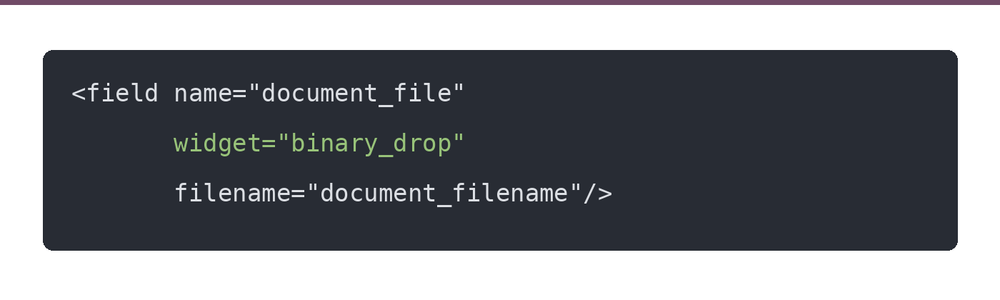
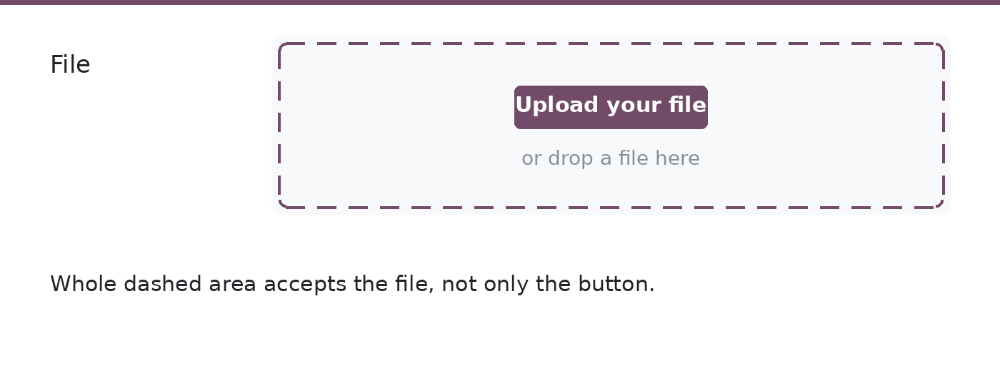
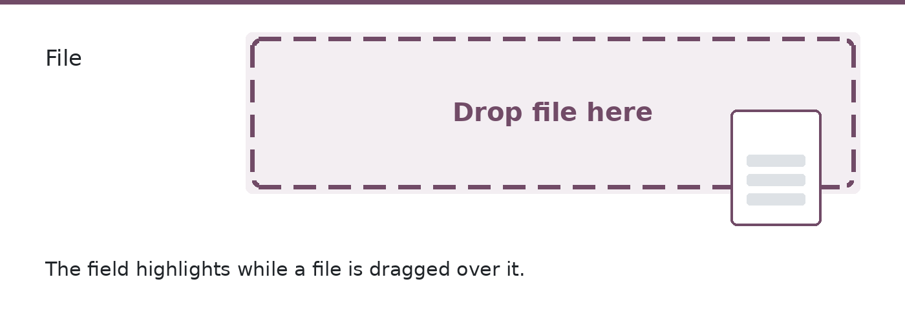
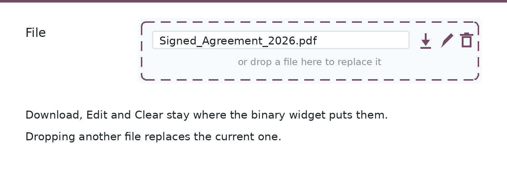

Key Features of Binary Drop Widget
Free and open source, LGPL-3. No configuration, no extra dependency beyond Odoo Web.
- This module introduces a custom binary_drop widget.
- Works like the standard binary widget, but the field itself becomes a drop area.
- A file dragged from the desktop and dropped on the field is uploaded straight away.
- Keeps the usual Upload, Download, Edit and Clear buttons of the binary widget.
- Checks dropped files against the accepted file extensions and the file size limit.
- Hint texts can be changed per field through widget options.
- No model, no view and no menu is added, so nothing changes until you use the widget.
- Support both community and enterprise edition.
How to Use the Widget
- Install the module, then add the
widget="binary_drop"attribute to any binary field in your XML view. - Keep the
filenameattribute as you would for the standard binary widget.

Empty Field
- An empty field shows the Upload your file button inside a dashed drop area, with a hint under it.
- The whole area takes the dropped file, not only the button.

Dragging a File Over the Field
- The field highlights while a file is dragged over it, so it is clear where to let go.
- Release the file and it is uploaded, with its name kept on the record.

File Already Uploaded
- Once a file is set, its name is shown with the Download, Edit and Clear buttons.
- Dropping another file on the area replaces the current one.
- On a read-only record the drop area is disabled and only the download link is shown.

Accepted File Types and Hints
- Limit what the field takes:
options="{'accepted_file_extensions': '.pdf,.xlsx'}" - A dropped file of another type is refused with a message, exactly as the Upload button does.
- Change the hint of an empty field:
options="{'drop_hint': 'or drop the signed PDF here'}" - Change the hint once a file is set:
options="{'replace_hint': 'or drop a new file to replace it'}"
Support
This module is free. We also offer Odoo customization and migration services.
Have questions or need assistance?
Contact Us: contact@algorid.com
Have questions or need assistance?
Contact Us: contact@algorid.com